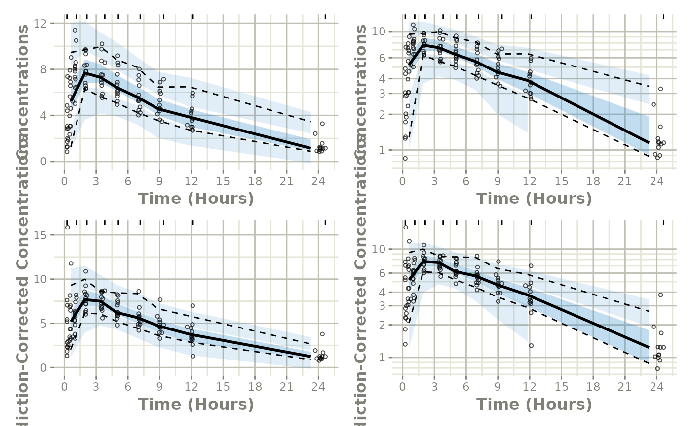

Easily Create a VPC using monolix2rx
create-vpc.RmdThis shows an easy work-flow to create a VPC using a Monolix model:
Step 1: Convert the Monolix model to
rxode2:
library(babelmixr2)
#> Loading required package: nlmixr2
#> Loading required package: nlmixr2data
library(monolix2rx)
# First we need the location of the monolix mlxtran file. Since we are
# running an example, we will use one of the built-in examples in
# `monolix2rx`
pkgTheo <- system.file("theo/theophylline_project.mlxtran", package="monolix2rx")
# You can use a control stream or other file. With the development
# version of `babelmixr2`, you can simply point to the listing file
mod <- monolix2rx(pkgTheo)
#> ℹ updating model values to final parameter estimates
#> ℹ done
#> ℹ reading run info (# obs, doses, Monolix Version, etc) from summary.txt
#> ℹ done
#> ℹ reading covariance from FisherInformation/covarianceEstimatesLin.txt
#> ℹ done
#> Warning in .dataRenameFromMlxtran(data, .mlxtran): NAs introduced by coercion
#> ℹ imported monolix and translated to rxode2 compatible data ($monolixData)
#> ℹ imported monolix ETAS (_SAEM) imported to rxode2 compatible data ($etaData)
#> ℹ imported monolix pred/ipred data to compare ($predIpredData)
#> ℹ solving ipred problem
#> ℹ done
#> ℹ solving pred problem
#> ℹ doneStep 2: convert the rxode2 model to
nlmixr2
You can convert the model, mod, to a nlmixr2 fit
object:
fit <- as.nlmixr2(mod)
#> → loading into symengine environment...
#> → pruning branches (`if`/`else`) of full model...
#> ✔ done
#> → finding duplicate expressions in EBE model...
#> [====|====|====|====|====|====|====|====|====|====] 0:00:00
#> → optimizing duplicate expressions in EBE model...
#> [====|====|====|====|====|====|====|====|====|====] 0:00:00
#> → compiling EBE model...
#> ✔ done
#> rxode2 3.0.0 using 2 threads (see ?getRxThreads)
#> no cache: create with `rxCreateCache()`
#> → Calculating residuals/tables
#> ✔ done
#> → compress origData in nlmixr2 object, save 7168
#> ℹ monolix parameter history integrated into fit object
fit
#> ── nlmixr² monolix2rx reading Monolix ver 5.1.1 ──
#>
#> OBJF AIC BIC Log-likelihood Condition#(Cov)
#> monolix 118.9368 355.482 377.7819 -169.741 21.26161
#> Condition#(Cor)
#> monolix 1.383153
#>
#> ── Time (sec fit$time): ──
#>
#> setup optimize covariance table compress as.nlmixr2
#> elapsed 0.030692 4e-06 6e-06 0.055 0.006 2.061
#>
#> ── Population Parameters (fit$parFixed or fit$parFixedDf): ──
#>
#> Est. SE %RSE Back-transformed(95%CI) BSV(CV%) Shrink(SD)%
#> ka_pop 0.427 0.204 47.8 1.53 (1.03, 2.29) 75.4 1.05%
#> V_pop -0.786 0.045 5.72 0.456 (0.417, 0.497) 12.7 13.3%
#> Cl_pop -3.21 0.0837 2.61 0.0402 (0.0341, 0.0473) 27.6 2.65%
#> a 0.433 0.433
#> b 0.0543 0.0543
#>
#> Covariance Type (fit$covMethod): monolix2rx
#> No correlations in between subject variability (BSV) matrix
#> Full BSV covariance (fit$omega) or correlation (fit$omegaR; diagonals=SDs)
#> Distribution stats (mean/skewness/kurtosis/p-value) available in fit$shrink
#> Censoring (fit$censInformation): No censoring
#> Minimization message (fit$message):
#> IPRED relative difference compared to Monolix IPRED: 0.04%; 95% percentile: (0%,0.52%); rtol=0.000379
#> PRED relative difference compared to Monolix PRED: 0%; 95% percentile: (0%,0%); rtol=4.94e-07
#> IPRED absolute difference compared to Monolix IPRED: atol=0.00253; 95% percentile: (0.000364, 0.00848)
#> PRED absolute difference compared to Monolix PRED: atol=4.94e-07; 95% percentile: (1.13e-08, 0.000308)
#>
#> ── Fit Data (object fit is a modified tibble): ──
#> # A tibble: 120 × 20
#> ID TIME DV PRED RES IPRED IRES IWRES omega_ka omega_V
#> <fct> <dbl> <dbl> <dbl> <dbl> <dbl> <dbl> <dbl> <dbl> <dbl>
#> 1 1 0.25 2.84 2.78 0.0636 3.73 -0.887 -1.40 0.132 -0.183
#> 2 1 0.57 6.57 5.00 1.57 6.57 0.00239 0.00303 0.132 -0.183
#> 3 1 1.12 10.5 6.80 3.70 8.75 1.75 1.93 0.132 -0.183
#> # ℹ 117 more rows
#> # ℹ 10 more variables: omega_Cl <dbl>, CONC <dbl>, depot <dbl>, central <dbl>,
#> # ka <dbl>, V <dbl>, Cl <dbl>, Cc <dbl>, tad <dbl>, dosenum <dbl>Step 3: Perform the VPC
From here we simply use vpcPlot() in conjunction with
the vpc package to get the regular and prediction-corrected
VPCs and arrange them on a single plot:
library(ggplot2)
p1 <- vpcPlot(fit, show=list(obs_dv=TRUE))
#> using C compiler: ‘gcc (Ubuntu 11.4.0-1ubuntu1~22.04) 11.4.0’
p1 <- p1 + ylab("Concentrations") +
rxode2::rxTheme() +
xlab("Time (hr)") +
xgxr::xgx_scale_x_time_units("hour", "hour")
p1a <- p1 + xgxr::xgx_scale_y_log10()
## A prediction-corrected VPC
p2 <- vpcPlot(fit, pred_corr = TRUE, show=list(obs_dv=TRUE))
p2 <- p2 + ylab("Prediction-Corrected Concentrations") +
rxode2::rxTheme() +
xlab("Time (hr)") +
xgxr::xgx_scale_x_time_units("hour", "hour")
p2a <- p2 + xgxr::xgx_scale_y_log10()
library(patchwork)
(p1 * p1a) / (p2 * p2a)
#> Warning in transformation$transform(x): NaNs produced
#> Warning in ggplot2::scale_y_log10(..., breaks = breaks, minor_breaks =
#> minor_breaks, : log-10 transformation introduced infinite
#> values.
#> Warning in transformation$transform(x): NaNs produced
#> Warning in ggplot2::scale_y_log10(..., breaks = breaks, minor_breaks =
#> minor_breaks, : log-10 transformation introduced infinite
#> values.